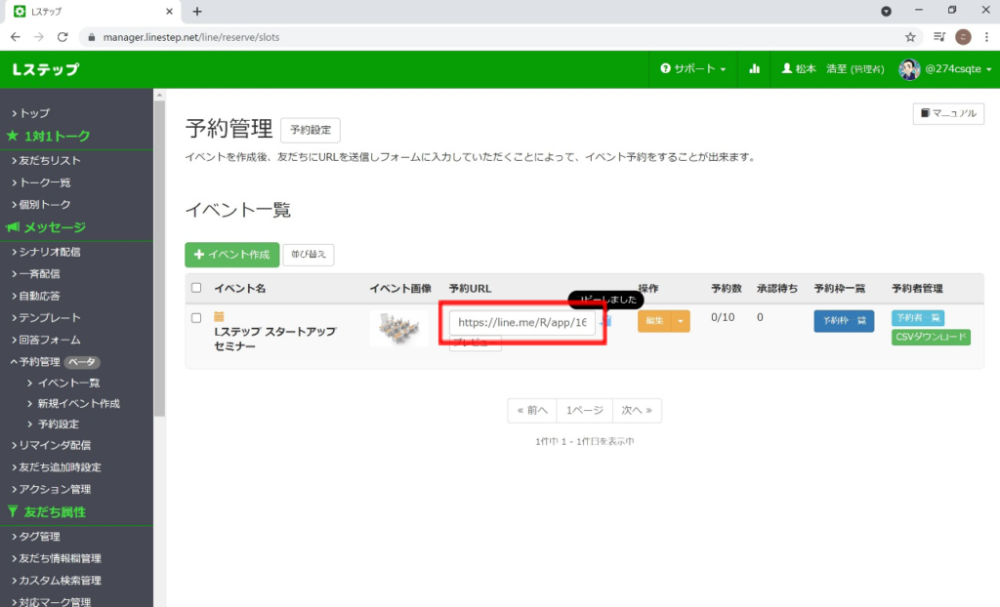
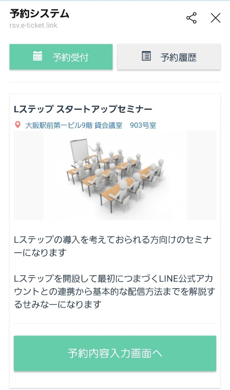
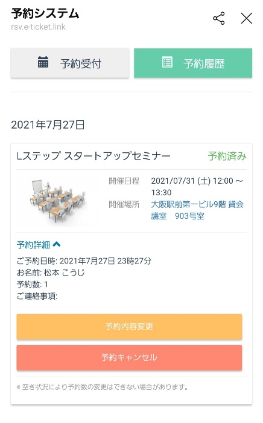

#032_Lステップの予約管理機能

こんにちは！matsumotoです。
過去のブログで、いくつかの予約システムについてご紹介したことがありますが、今回は『Lステップ』を導入すると利用できる「予約機能」について解説します！
サロンやクリニックなどを経営されていると、毎日のように予約を取ったり管理したりされていると思います。最近は、LINE公式アカウントを利用して、LINE上で集客〜予約までを受け付けるお店が増えました。
今日ご紹介するLステップの【予約管理】は、主にセミナーなど単発の催しに特化した機能です。
これを利用すると、LINE上で予約・変更・キャンセル・自動リマインドメッセージまで送ることができるようになります。個別で返信したりする手間もなく、リマインドメッセージで予約の忘れ防止にも繋がり、大変便利ですよ！
（１）Lステップの管理画面から操作可能！

それでは私がセミナーを開催することを想定して説明していきたいと思います。
まずは、Lステップ管理画面から『予約管理』で新規イベントの作成をします。作成すると、イベントのURLが発行されます。
（２）LINEからメッセージ配信

このURLをメッセージ欄にコピペして、LINE Official Account Managerからセミナー案内のメッセージ配信をします。
（３）友だちがURLをタップ

友だちが、配信画面から予約のURLをタップすると、予約システムの画面が開きます。
必要事項を入力し送信すると予約は完了となります。
（４）自動返信

予約が完了すると、お客さんに『お申込み承りました』という確認メッセージが返信される、という自動返信もできます。
予約完了後は、お客さま（友だち）が同じURLをタップすれば予約履歴を何度でも確認することができ、そこから変更やキャンセルをすることも可能です。
（５）予約やキャンセルのブロック機能

予約後のキャンセルや予約内容の変更をされたくない場合は、キャンセル・変更をブロックする設定方法もあります。
さらに、事前に定員を決めている場合は、定員数いっぱいになると同時にイベントの予約枠を非表示にすることもできます。
（６）リマインド機能
そして、予約日の数日前にリマインドメッセージを自動で送るという設定もできますので、お客さま（友だち）のうっかり忘れやドタキャン防止にもつながりますし、持ち物の案内や会場の地図・zoomのURLを送ることもできます。
その他にも、決済リンクを送ったり、出席者名簿や顧客管理などにも利用できます。
このように、有料の予約システムを使わなくても、Lステップさえ導入すればこれらの機能を利用することができます。これまで電話やメールで予約の管理をされていた方にとっては、とても便利になります！
これらの機能を活用することで、運用コストや人件費の削減にもつながりますので、Lステップの導入をご検討されている方は、ぜひ参考になさってくださいね！
まずはLINE公式アカウントを開設しましょう！
●LINE公式アカウントの開設方法はこちら
●LINE公式アカウントをオススメする理由はこち
●LINE公式アカウントでできることはこちら
●Lステップでできることはこちら